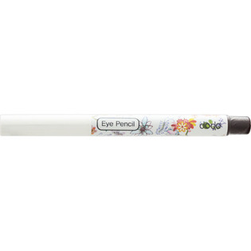

返回列表
产品名称：ドド アイペンシル EE02

＿ ドド アイペンシル EE02 ０．３５Ｇ
メーカー ＿
JANコード 8809171315300
商品の特徴
シャープナーのいらない、便利な繰り出し式のアイライナーです。
成分・分量
＜全成分＞
水添ココグリセリル、水添野菜油、ステアリン酸亜鉛、水添ヤシ油、トリエチルヘキサノイン、酸化鉄、青1
用法及び用量
目頭から目尻に向かって、まつげの生え際に沿って、少しずつラインをひいてください。